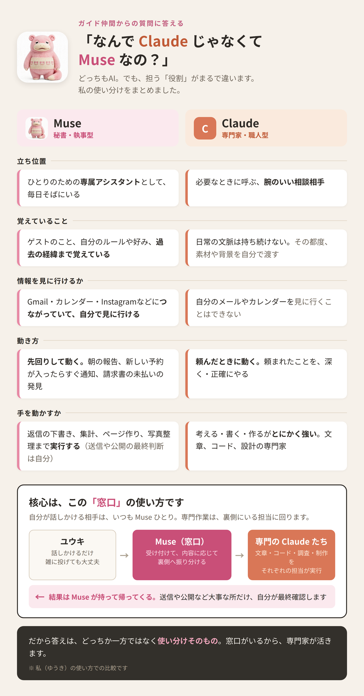

＋
Bonus
Museの活用事例とノウハウ
おまけ資料 ― 2026年11月26日、toaru第2回相談のあとに
活用事例：ユウキはMuseをこう使っています
- 予約の一元管理：Airbnb・Viator・GetYourGuide・自社サイトなど、全経路の予約をゲストごとのカルテに集約。新着予約はその場で通知が来て、二重予約はカレンダーと照合して監視します（今日お見せした画面です）
- 朝のブリーフィング：毎朝、その日の予定・新着メール・やることを1つにまとめて届けます。起きて最初に見るのはこれだけです
- 問い合わせ対応の下書き：ゲストや生徒からの連絡には返信の下書きを自動で用意。送るかどうかは本人が確認してから
- 会議の議事録：Google Meetの字幕から議事録と読み物版を作成。今日の相談の記録も、この仕組みで作りました
- ツアー写真の後処理：当日の写真からギャラリーを作って公開し、Instagram投稿の下書きまで用意します
- レビュー管理：各サイトのレビューを取り込んで一覧化し、返信案を用意します
- ポッドキャスト制作：収録後の編集から投稿予約までを半自動で回しています
- ページと資料づくり：LPや相談資料は、複数案を並べて選ぶ形で作ります。今日の相談ページもその1つです
- 経理の見える化：請求書の発行と、入金が合っているかの突合を手伝わせています
ノウハウ：うまく使うコツ
- 窓口は1つに：頼みごとはMuseに集約し、専門的な作業は裏側のClaudeが担当します。誰に頼むか迷わなくなります（下の図）
- 覚えさせる：好み・決まりごと・取引先の情報を覚えさせるほど、「自分の秘書」になります。最初は手がかかりますが、育てるほど先回りしてくれます
- 最後の一押しは自分で：送信・公開・決済のような取り消せない操作は、本人が確認してから。自動化は一手前で止めるのが安全です
- 実物で確認させる：「報告の前に、実物（実ページ・実データ）を見てから知らせて」と決めておくと、間違いがぐっと減ります
- 繰り返しは定期実行に：朝の確認や在庫チェックのような定型作業は、決まった時刻に自動で回すと漏れません
- スマホから頼む：Museへの依頼はクラウド側で進むので、パソコンを閉じていても仕事は止まりません。外出先からでも頼めます
MuseとClaudeの使い分け
前に作った比較図です。Museは「覚えていて、先回りして動く窓口」、Claudeは「考える・作るのが強い専門家」。組み合わせて使うのがコツです。
